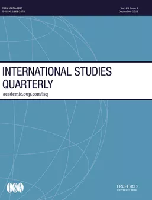
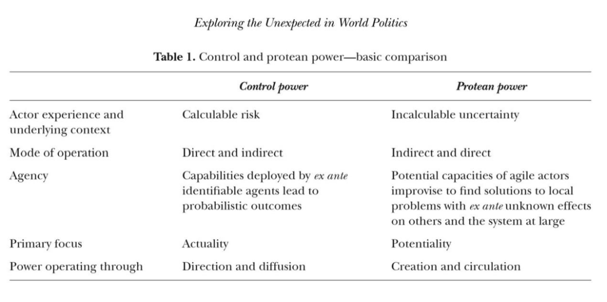
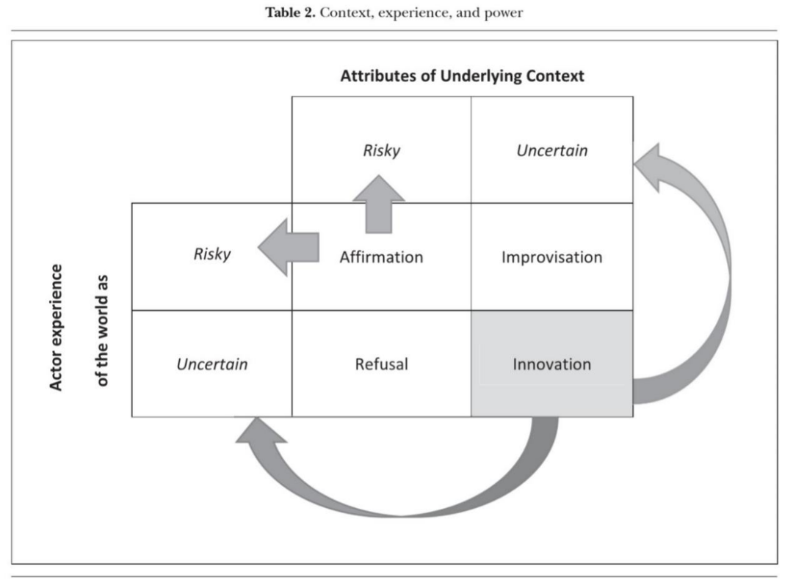
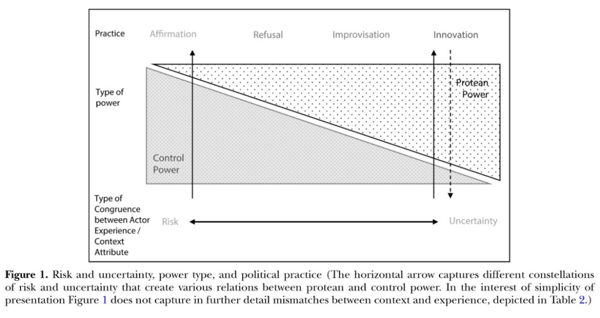

收录于合集 #理论研究 96个

作品简介
【作者】 彼得·卡赞斯坦(Peter J. Katzenstein)，美国著名政治学家，康奈尔大学政治学教授，2008—2009年任美国政治学会主席。荣获《经济学家》杂志“最具影响力国际政治经济学学者”称号，伍德罗•威尔逊最佳著作奖等。主要研究领域包括国际政治经济学、世界政治的安全与文化和地区主义等。
露西亚·赛博特(Lucia Seybert)，美利坚大学国际服务学院教授级讲师，研究领域包括能源政策，环境与国际规范，以及权力、主权和安全等国际关系理论。
【编译】 王川（国政学人编译员，吉林大学公共外交学院）
【校对】 许文婷
【审核】 赵雷
【排版】 梁鑫昱
【来源】 Peter J. Katzenstein & Lucia Seybert. (2018). Protean Power and Uncertainty: Exploring the Unexpected in World Politics. International Studies Quarterly, 62 (1), 80-93.

期刊介绍

《国际研究季刊》( International Studies Quarterly )是国际研究协会的旗舰期刊，由牛津大学出版社每年发行四期，旨在发表与国际研究中重要理论性、实证性、规范性主题相关的领先学术成果。根据Journal Citation Reports的数据，2018年该期刊的影响因子为2.172。
多变权力与不确定性：探究世界政治中的不可预期性
Protean Power and Uncertainty: Exploring the Unexpected in World Politics
文章导读
本文介绍了多变权力(protean power)这一概念，为更好地分析世界政治中未预料到的事件提供了基础。与传统权力不同，多变权力是行为体在适应不确定状况时灵活回应的结果，而传统意义上的权力则是行为体在可预估风险的情况下行使控制，并由此获得其希望得到的结果的能力。作者认为传统的权力观点过于局限，而由作者提出的分析模型中的多变权力则能更好地适用于世界政治中不可预知的变数。值得注意的是，无论基于潜在环境(underlying context)还是行为体的经验(actor experience)，行为体在面对风险（risk）和不确定性（uncertainty）之间的转换时，都会做出肯定（affirmation）、否决（refusal）、即兴（improvisational）或者创新（innovation）这四种回应策略，在此过程中，它们为可控权力(control power)和多变权力的产生创造了空间，二者是上述回应行为的结果而非原因。然而，多变权力不应该取代可控权力。在以风险和不确定性为特征的复杂环境中，这两种基本权力形式以多种方式相互关联。
01
引言
现有的关于权力的研究未能清晰地区分风险和不确定性。 因此，本文在现有研究的基础上， 将不确定性纳入更复杂的权力分析中 ，虽然这一改进并不能提高预测的准确度，但是确实能够为权力在具有风险且不确定的情况下如何产生、运作和被消耗提供更为深刻和充分的理解和解释。多变权力是指灵活的参与者处理不确定性的实践结果。不同于相对而言可以预测的可控权力，多变权力来源于“多向”或者“易变”的过程。尽管多变权力源于有意识的行为，但这些行为从一开始就是不可预期的。多变权力并非可控权力的竞争力量，而是与其紧密联系，共同演化（coevolves）。多变权力能够对那些令人措手不及的事件做出回应，如中国的意外崛起，柏林墙的开放和阿拉伯之春，它使我们不再忽略未知的因素，转而关注行为体如何用即兴、创新的方式来处理不可预期的事件，并在此过程中进一步加强了不确定性。
作者首先关注现有论述权力的文献，然后对可控权力和多变权力进行了探讨，探索在具有风险和不确定性的情况下的政治实践，进而表明近年来的国际关系学者完全忽略了不确定性，这也解释了为什么他们未能认识到多变权力及其影响。最后，作者提出了一些关于正视多变权力的影响的思考。
02
权力
权力理论家坚持认为，权力建立在行为体之间的关系而非行为体的属性之上。 权力必须从关系和情境的角度来理解 ，对权力的充分分析应突出其原因结果。达尔（Dahl）将权力定义为让他人做其本身不会做的事情的能力，为了比较不同行为体的权力，达尔坚持将主要关注点放在受动者的回应而不是施动者的行为上。作者特别关注了米歇尔·福柯（Michel Foucault）晚期关于新型和自发的权力效应（emerging and spontaneous power effects）的论述，其中，海沃德（Hayward）的分析证明了作者的观点是富有成效的。她认为权力机制最好被界定为社会边界（social boundaries）而不是有权力的行为体利用的工具，即“权力界定可能性的范围”，而法律、规则、规范、习惯、认同和社会准则构成了社会边界。它们对不同的行为加以支持或约束，即使是最强大的行为体也需要受其限制。行为体可以通过由可能性的程度和行为体的能力决定的实践来改变权力的方向。
要探究权力的运作，我们不应该只通过研究“权力是如何分配的”来区分有权力和无权力的情况，还应该研究“权力的机制如何界定小概率的（不）可能((im)possible)、大概率的（不）可能((im)probable)、自然(natural)以及正常(normal)的（情况）”。权力不对称的易变性不仅能够约束和控制（其他行为体），还能通过界定可能性的范围进行授权。
03
可控权力与多变权力
首先，作者区分了两种情况。 行为体的经验与潜在环境是否处于风险或不确定中，构成了理想状态下可控权力与多变权力的典型区别（如表1） 。不可预估性提供了多变权力所处的环境与行为体经验。多变权力是行为体针对不可预测的环境，做出即兴(improvised)与创新(innovative)回应的结果，行为体并不能有意识地利用这种权力。同时，多变权力对环境也有重要影响。行为体通常无法预测这些影响。在不确定性的情况下，多变权力加强了不可预测性。在作者看来，不可预期性在权力动态中起着不可或缺的作用。世界的易变性(mutability)超越了构成可控权力的可预见性。 我们经常会把风险和不确定性这两个概念作为同义词来使用，但作者指出应当清晰地区分风险与不确定性，明确这两个概念的差异，这对分析权力与不可预知性的变化至关重要。

面对风险与不确定性时，行为体如何选择其实践呢？ 表2通过两个维度说明了实践与权力结果的联系：潜在环境的属性与行为体的经验。 可控权力与多变权力的共存和共同演化并非依照一个简单的连续体而产生。相反，表中的四个单元分别代表着特定的政治实践，它们是这两个维度相互作用的产物。虽然作者承认，环境属性与行为体经验对政治实践的影响，以及由此导致的权力类型在经验上并不容易区分，但从理论上讲，我们仍可以得出一些推论。
四个单元中的每一种政治实践都会产生反馈到不确定性与风险上的权力动态。 在左上单元中，肯定(affirmation)是行为体认识到可以积累并有意地利用能力(capabilities)来行使权力(power)。在可预测的风险的环境下，它可能采用默认(acquiescence)与遵循(compliance)两种方式。正如短箭头所示，它加强了针对未来结果的概率预估。这属于可控权力的范围，而国际关系学者们却错误地只关注这种风险世界（除此之外，作者认为还有不确定世界、风险与不确定并存的世界这两种形式）。
而本文则强调表2中其他三个单元所代表的另外的两个世界。 在右下单元中，创新(innovation)是对第二种世界——不确定世界的回应。多变权力是创新的结果，它引发了更多的不确定性并凸显了可控权力的无用性。同时，我们也身处于第三种世界——风险与不确定性并存的世界中。在紧急危机期间，行为体处在右上单元——即兴(improvisational)中。尽管行为体并未意识到，但不确定性使得概率的预估毫无可能，这是导致大多数危机混乱无序的根源。行为体假设，当情况已经可能会引发不可预知的结果时，“以往的方法(old ways)”会仍然适用。但当它们发现这些既有方法不再起作用时，为了应对日益不稳定与不确定的环境，它们被迫采取即兴方案。相反，随着之前震撼性的（即兴）方案演变为最佳实践、风险取代了不确定性，行为体对普遍不确定性的假定会可能持续存在。他们会继续做出只影响其当前环境的决策，拒绝尝试基于风险的决策，同时并不渴望直接地对他人施加控制。

04
权力实践、风险、不确定性与复杂性
图1界定了肯定、否决、即兴和创新四种实践，这四种实践产生于潜在背景的属性（有风险或不确定）和行为体对环境的经验（认为有风险或不确定）两个维度之间的互动。 光谱的两个端点将肯定与可控权力相连，将创新与多变权力相连，刻画出了行为体的经验与他们所处环境相一致的情况，从而创造出风险明确和不确定性显著的形成鲜明对比的情况。在风险明确的情况中，四种实践产生了基于风险的可控权力。在不确定性凸显的情况中，潜在环境和行为体经验中的不确定性通过创新产生了多变权力。在这两种极端情况之间，作者还刻画了一系列产生于行为体经验与其所处环境不一致的实践，这导致了多变权力和可控权力之间不同的互动形式。

忽略已建立的概率预估之外的新变量的实践会影响未来的权力潜力，作者将该类实践标记为拒绝。相反，创新则是一种风险领域中可能出现的回应，它可能会造成预期的收益，也可能会导致惊人的损失。“肯定”能够直接促进可控权力的扩散，“否决”、“即兴”和“创新”则以不太直接的方式增加多变权力的循环强度。这种概念化不是聚焦于二元关系中的狭隘的权力效应，而是突出广泛的环境和行为体的经验。
从左到右观察图1，可以看到可控权力和多变权力的不同构成。 尽管图1仅对这些类别进行了简单的一维描述，但它试图传达的是，因行为体采取特定的实践而造成的在风险和不确定性之间波动灵活的现实情况。其中，行为体对环境的直接经验非常重要。“肯定”是一种主要与可控权力相关的回应。无论出于何种原因，如果行为体B屈服于行为体A，可控权力就发挥了效用。“拒绝”更多地与风险世界而非不确定世界相联系，它挑战而非否定了潜在概率。在一个不确定的世界中，通过即兴与创新，多变权力使得预测哪种选择与实践会导致什么样的结果毫无可能。
从上到下观察图1，可以将实践同权力类型、环境属性和行为体经验相联系。 多变权力源于个体对不确定性的反应，但它进一步放大了这种不可预期性，这不仅仅是由于特定个人的经验，也是因为其所处的环境与未来的潜在可能。 权力动态通常贯穿于不同的分析层次，将个人同国家、市场、企业、地区组织等相联系。国际关系中的“层次分析问题”也是多变权力动态的一个重要特征。 作者承认，不确定性与风险、可控权力与多变权力之间的边界不可避免地会存在分析漏洞，而且在经验上也很难识别。但我们应当谦卑地承认能够轻易造成不可预测的实践与结果的权力动态。换言之，我们应当做好准备接受一个多变权力发挥重要作用的世界。
05
国际关系研究对风险与可控的专门关注
国际关系研究的重要组成部分与经济学的知识发展紧密相关，这些方法把注意力放在可控的风险世界，而很大程度上忽视了不可控的不确定世界。在利用这些方法时，它使我们仅仅关注可控权力，而忽视了多变权力，并未能对不可预测性进行分析。 在本部分，作者通过简要回顾近期关于安全(security studies)和政治经济(political economy)的重要研究考察了这一缺失。
06
结论
在一个杂乱无序、时而混乱的世界里，预测的准确是无法实现的。一个充满即兴与创新潜力的政治世界会比可控权力这一概念所考虑的更加深不可测。多变权力可以富有创造性，但也可能是具有破坏性的。
本文坚持从关系的角度分析权力，具有四点优势 ： 第一，它符合国际关系研究的最新进展（作者注：近几十年，安全和政治经济研究诞生了大量的研究成果，它们分析了世界政治中的权力动态）。第二，它将国际关系中的权力分析与作为更广泛领域的权力理论紧密地结合在一起。第三，它有助于我们更好地理解世界政治中的戏剧性变化。只关注风险，而忽视不确定性的方法视这种变革为外生的。然而，关注多变权力则打开了将这种变革过程视为内生的大门。最后，正如理查德·布克斯塔伯(Richard Bookstaber)所认为的那样，世界政治中的不可预知性与“层展现象”(emergent phenomena)、概率不断变化的“遍历”过程(ergodic processes)、复杂世界的“计算不可化约性”(computational irreducibility)、以及无法预测的“根本不确定性”(radical uncertainty)这四个过程有关。这四个过程在世界政治中无处不在。
本文由国政学人独家编译推荐，文章观点不代表本平台观点，转载请联系授权。


好好学习，天天“在看”